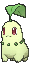
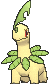
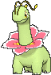
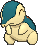
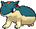
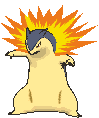
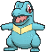
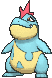
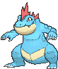
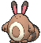

-
Chikorita #152
- Grama
Ele agita sua folha para manter os inimigos afastados. No entanto, uma doce fragrância também exala da folha, criando uma atmosfera amigável que acalma os combatentes.
-
Bayleef #153
- Grama
O pescoço de um Bayleef é cercado por folhas enroladas. Dentro de cada folha há um pequeno broto de árvore. A fragrância desta sessão deixa as pessoas animadas.
-
Meganium #154
- Grama
A fragrância da flor de um Meganium acalma e acalma as emoções. Em batalha, ele exala mais de seu cheiro calmante para enfraquecer o espírito de luta do inimigo.
-
Cyndaquil #155
- Fogo
Ele lança chamas de suas costas para se proteger. O fogo queima vigorosamente se o Pokémon estiver com raiva. Quando está cansado, estala com combustão incompleta.
-
Quilava #156
- Fogo
Ele intimida os inimigos com intensas rajadas de chamas e ar superaquecido. Sua agilidade rápida permite que ele desvie de ataques mesmo enquanto queima um inimigo.
-
Typhlosion #157
- Fogo
Ele pode se esconder atrás de uma névoa de calor brilhante que cria usando suas chamas intensas. Typhlosion cria explosões explosivas que queimam tudo em cinzas.
-
Totodile #158
- Água
Apesar de seu corpo pequeno, as mandíbulas do Totodile são muito poderosas. Embora possa pensar que está apenas beliscando de brincadeira, sua mordida tem força suficiente para causar ferimentos graves.
-
Croconaw #159
- Água
Uma vez que suas mandíbulas prendam seu inimigo, ele absolutamente não o soltará. Como as pontas de suas presas são bifurcadas para trás como anzóis, elas ficam inamovíveis.
-
Feraligatr #160
- Água
Ele abre sua enorme boca para intimidar os inimigos. Em batalha, ele corre usando suas patas traseiras grossas e poderosas para atacar o inimigo com uma velocidade incrível.
-
Sentret #161
- Normal
Eles se revezam na guarda na hora de dormir. A sentinela desperta os outros se sentir perigo. Se alguém se separa, fica insone de medo.